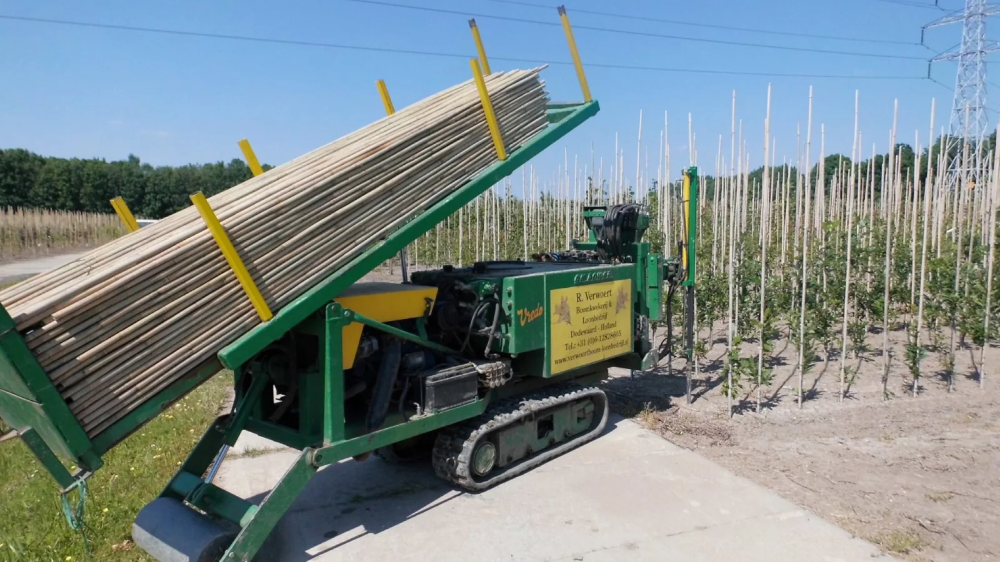
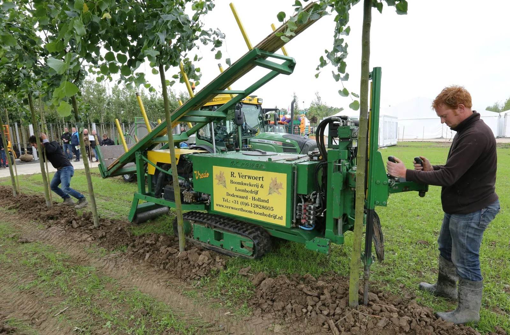

Planten van spillen en bomen
Aanplanten met de plantmachine of met de schop. We kiezen de werkwijze die past bij uw opplantmateriaal en perceel.
VAKMANSCHAP IN DE PRAKTIJK
Het werk op uw kwekerij vraagt om mensen die weten wat ze doen. Sinds 2002 helpen we met de werkzaamheden die uw bomen verder brengen.
Bespreek uw werkzaamheden
LOONWERK OP MAAT
Een vakbekwaam team, een breed aanbod aan machines en de flexibiliteit om mee te bewegen met uw planning. We stemmen ons werk af op uw kwekerij.
Aanplanten met de plantmachine of met de schop. We kiezen de werkwijze die past bij uw opplantmateriaal en perceel.
Vakkundige ondersteuning bij het snoeien en aanbinden van uw bomen, met aandacht voor een goede verdere groei.
Met een waterstraal maken we ruimte voor de stok. Onze machine is geschikt voor stokken van 8 tot 17 ft.
Met HOLMAC-kluitenrooiers maken we kluiten van 25 tot 110 cm. Grotere kluiten bespreken we in overleg met een gespecialiseerd collega-loonbedrijf.

DE JUISTE MACHINE OP DE JUISTE PLEK
Goed loonwerk begint met weten wat er nodig is. We bespreken uw wensen en zetten passende mensen en machines in. Praktisch, flexibel en met duidelijke afspraken.
Bel 06 128 286 05PERSOONLIJK CONTACT
Vertel ons wat u nodig heeft. We denken graag mee over het assortiment, de werkzaamheden en de planning.
Neem contact op